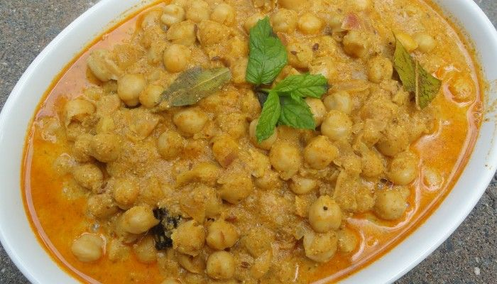

Back to States
Chana Madra

Ingredients
- 1 cup soaked and boiled chickpeas
- 1 cup yogurt (curd), well beaten
- 1 tbsp gram flour (besan)
- 2 tbsp ghee
- 1 tsp cumin seeds
- 1/2 tsp turmeric powder
- 1 tsp coriander powder
- 2 cloves
- 1 small cinnamon stick
- 2 green cardamoms
- Salt to taste
Instructions
1. Heat ghee in a pan and add cumin, cloves, cardamoms, and cinnamon.
2. In a bowl, mix gram flour with yogurt and whisk well.
3. Add the yogurt mix to the pan, stir continuously to avoid curdling.
4. Add turmeric, coriander powder, and salt. Cook for 5–6 minutes.
5. Add boiled chickpeas and simmer for 15–20 minutes on low flame.
6. Stir occasionally until thick and aromatic.
7. Serve hot with steamed rice or roti.